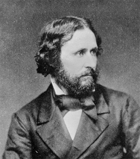
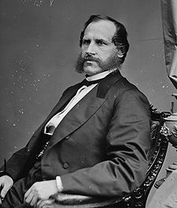

|
Blacks arrived in the Pacific Northwest with the first white explorers and fur
trappers. In August 1788 Marcus Lopez, a cabin boy aboard the Lady
Washington of Captain Robert Gray, became the first black person to set foot
on Oregon soil. Unfortunately, he was slain during an altercation between
unfriendly Indians and the ship's crew. Sixteen years later another black, York
of the Lewis and Clark expedition, passed through Oregon along the Columbia
River. Over the next forty years numerous blacks traveled throughout the Oregon
Country as trappers, servants, or explorers for the various British and American
companies exploiting the fur resources of the region. Blacks also came with the
exploring expeditions sponsored by the American government in the 1830s and
|

John C. Frémont
|
1840s, such as those led by Captain John C. Frémont and Lieutenant Charles
Wilkes. But most blacks arrived in Oregon after crossing the plains with white
families as servants or slaves. A majority of the fifty-eight blacks counted in
the census of 1850 were listed as servants, laborers, or children living with
white families.
Between 1840 and 1860, Afro-Americans never exceeded 1 percent of the total
population of the Pacific Northwest. The question of slavery and free blacks,
however, dominated the political life of the region during that period.
Proslavery forces saw the Oregon Country as a chance to create a slave state, or
at least a proslavery free state, in the newly settled lands of the Far West.
Two antislavery groups emerged in opposition to this force. One advocated a
popular sovereignty approach while the other embraced abolitionism. Neither the
proslavery nor abolitionist interests ever succeeded in dominating the Pacific
Northwest. Instead, the antislavery and anti-black views of popular sovereignty
Democrats represented the majority viewpoint in the years prior to the Civil
War.
Such sentiment reflected the origins of the adult whites who settled in the
Oregon Country. Most of the pre-Civil War emigrants came from the Old Northwest,
or the border states of Kentucky, Tennessee, and Missouri. Indeed, many had
migrated west to escape the constant economic and political struggles with
proslavery interests. They carried to their new homes a hatred of both slavery
and blacks. When forming new governments in the Pacific Northwest, these
settlers not only rejected slavery but sought to exclude or restrict free blacks
as well.
In establishing a provisional government in 1843-1844, settlers in Oregon
Country demonstrated their racial and social attitudes by adopting laws
prohibiting slavery and involuntary servitude, restricting the franchise to free
white males twenty-one years old, and excluding slaves or free blacks. Between
1845 and 1848 the provisional legislature dropped the exclusion law, probably
because it proved impossible to enforce on a lightly populated frontier.
However, fearing a potential alliance between Indians and blacks, in 1849
Oregon's new territorial legislature reenacted legislation prohibiting blacks
and mulattoes from settling in the territory. The law exempted blacks and their
offspring already residing in the territory. This exclusion act remained in
force until accidentally repealed in 1854. The 1859 Oregon Constitution
reinstated the ban on black migration and denied blacks voting rights.
Those blacks who came to Oregon either by their own free choice or as
dependents of others were subjected to economic as well as political
discrimination. Blacks were excluded from the benefits of the Donation Land
Claim Act (1850), which permitted white settlers over twenty-one years of age
and their wives to claim 640 acres if they arrived before December 1850 and half
that amount if they came during the next three years. Still, a few black farmers
persisted and even thrived. With white support, several blacks in both Oregon
and Washington territories successfully petitioned their respective legislatures
to confirm their land claims. Special acts also exempted individual blacks from
Oregon's exclusion legislation. Court records indicate that judicial process
expelled only one black from Oregon (1851) before statehood. Washington
Territory never adopted exclusionary policies.
|

George A. Williams
|
While slavery was prohibited by law in Oregon, evidence indicates that
between 1850 and 1860 at least fourteen blacks clearly were slaves. Blacks
resisted slavery in Oregon, and in the celebrated legal case of Holmes v.
Ford (1853), Chief Justice George A. Williams of the Territorial Supreme
Court declared that slavery could not exist in Oregon without specific
legislation to create it. This case marked the last attempt to maintain slavery
by judicial means. However, proslavery and antislavery groups openly debated
whether slavery should be permitted in Oregon until voters in 1851 rejected a
slavery clause in the proposed state constitution by a vote of 7,727 to 2,645.
At the same time, the voters overwhelmingly approved a black exclusion clause
for inclusion in the document. Although nullified by amendments to the federal
constitution, the clause was not repealed until 1926.
By 1860, 154 blacks had settled in the Pacific Northwest, living in fourteen
of nineteen Oregon counties and eight of nineteen counties in Washington
Territory. Most were listed in the census as farmers, farm laborers, cooks, or
barbers. They came from sixteen states and eight foreign countries. Black
settlers braved the hardships of crossing the Great Plains or a long ocean
voyage to build a new life on the frontier of the Pacific Northwest. Once there
they encountered racial hostility and discrimination but established nonetheless
a small but permanent black presence in the region.
Source: Randall M. Miller and John David Smith, eds. Dictionary of
Afro-American Slavery (Westport, CT: Praeger, 1997), 557-59.
|